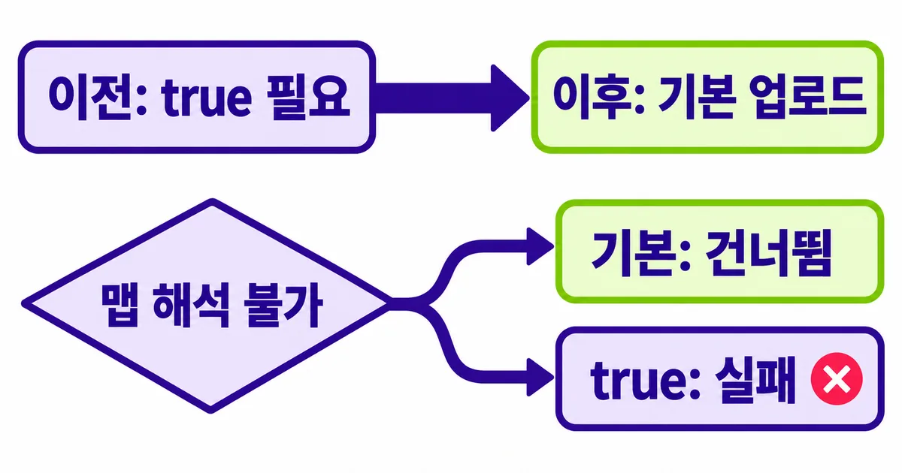
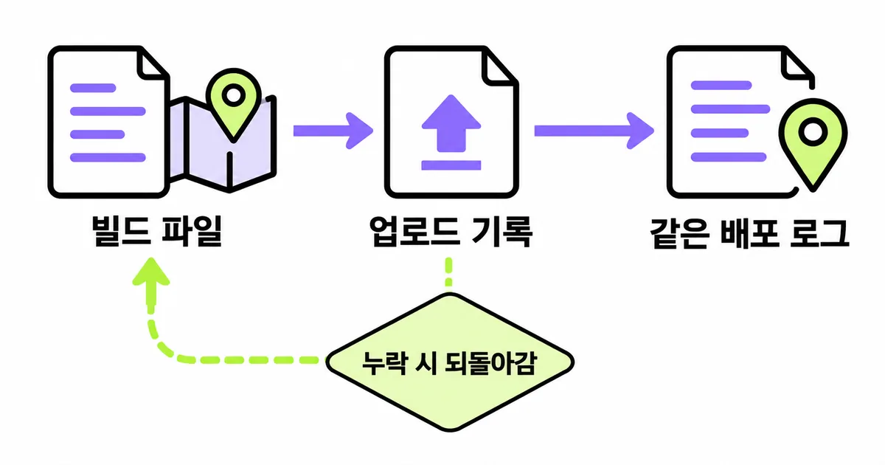
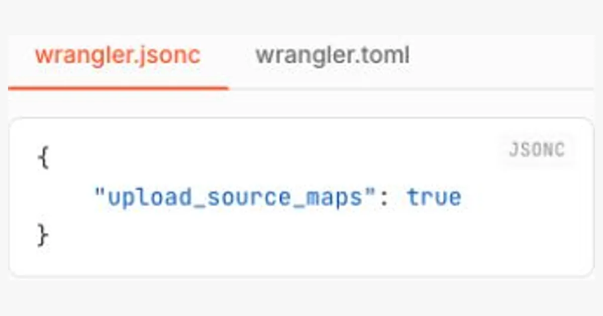

오류 로그가 압축된 파일의 한 줄만 가리키면 고칠 원본을 찾기 어렵다. Wrangler 소스맵은 10월 20일 발표된 변경으로 기본 업로드되지만, 배포 성공이 모든 맵의 정상 적용을 뜻하지는 않는다. Workers를 배포하는 개발자는 버전, 맵 생성, 실제 로그 복원을 나눠 확인해야 한다. 특히 커스텀 빌드라면 기본값만 믿고 설정을 지우기 전에 파일이 만들어지는 경로부터 살펴보자.
IT 트렌드 해설
30초 요약
- Wrangler 소스맵은 4.150.0부터 기본 업로드된다. 다만 해석할 수 없는 맵은 기본 모드에서 건너뛰므로, 배포 성공만으로 원본 위치 복원을 확인했다고 볼 수 없다.
- 버전과 맵 파일을 읽은 뒤 검증 환경의 오류 로그에서 원본 위치를 확인한다.
- 소스맵은 오류를 고치지 않으며 커스텀 빌드의 파일 생성과 로그 수집 조건은 별도다.
먼저 알아둘 말
- 소스맵
- 변환된 코드 위치를 작성한 원본 파일·줄·열과 연결하는 정보 파일이다.
- 오류 로그
- 실행 중 생긴 오류와 함수·파일 위치 같은 조사 단서를 남긴 기록이다.
- 커스텀 빌드
- 기본 배포 도구 대신 별도 도구·설정으로 코드를 묶는 과정이다.
핵심 해설 · Cloudflare Changelog · Workers Docs · 2026. 10. 20
기본 업로드와 오류 위치 복원을 구분하는 Workers 점검 기준
Wrangler 기본 소스맵 업로드 변경을 계기로 설정 생략·true·커스텀 빌드와 로그 복원의 완료 조건을 나눠 확인한다.
설정을 지우기 전에 배포 도구와 맵 파일부터 본다
Wrangler 소스맵은 4.150.0부터 기본 업로드된다. 다만 해석할 수 없는 맵은 기본 모드에서 건너뛰므로, 배포 성공만으로 원본 위치 복원을 확인했다고 볼 수 없다.
대상은 Workers의 JavaScript·TypeScript 빌드와 배포를 관리하는 개발자다. 브라우저에서 동작하는 프런트엔드 전체나 모든 호스팅 서비스의 기본값이 바뀐 것은 아니다. 먼저 이번 배포가 어느 경로로 코드를 묶고 올렸는지 확인한다.
- 배포 작업이 실제 사용하는 Wrangler 버전과 빌드 도구를 확인한다.
- 업로드 설정의 생략·true·false와 외부 맵 파일·연결 주석을 대조한다.
- 허가된 검증용 Worker에서 오류를 확인하고 같은 배포의 실시간 로그를 연다.
- 예상한 원본 파일·줄 번호와 남은 미복원 줄을 기록해 적용 여부를 판단한다.
10월 20일 변경 기록은 Wrangler 4.150.0부터 deploy·versions upload·preview가 맵을 기본 생성·업로드한다고 알렸다. Cloudflare Vite 플러그인은 1.64.0부터 Worker 빌드에서 기본 생성한다. 로컬 도구와 CI가 같은 버전인지도 비교한다.

생략과 true는 맵이 빠졌을 때 다르게 멈춘다
설정이 없을 때도 업로드된다는 설명을 true를 지워도 완전히 같다는 뜻으로 읽기 쉽다. 새 기본 모드는 해석할 수 없는 맵을 건너뛰고 업로드를 계속한다. inline data: 맵이나 없는 파일을 가리키는 sourceMappingURL이 예다.
| 설정 | 업로드 의도 | 해석 불가 맵 |
|---|---|---|
| 생략: 새 기본값 | 기본 업로드 | 건너뛰고 진행 |
| true | 명시적 업로드 | 업로드 실패 |
| false | 업로드 중지 | 복원에 맵을 쓰지 않음 |
따라서 기존 true는 업로드를 켜는 값이면서 누락을 배포 단계에서 드러내는 선택일 수 있다. 맵을 필수 산출물로 관리하던 프로젝트라면 기본값 변경만 보고 제거하지 않는다. 이 차이는 발표와 현재 설정 문서를 함께 읽어야 보인다.
아래는 기존 Wrangler 설정에 병합할 한 항목의 예시다. 완전한 프로젝트 설정이나 실행 결과가 아니다. 이 예시는 해석할 수 없는 맵이 있어도 계속 진행하는 새 기본 모드 대신 실패를 선택한다.
{
"upload_source_maps": true
}반대로 업로드를 원하지 않는 Wrangler 프로젝트는 false를 명시할 수 있다. 다만 cf deploy는 빌드 출력의 맵을 올리는 경로이므로 Worker 환경의 맵 생성을 끄는 설정을 확인한다. 도구가 다른데 설정 이름 하나만 복사하면 의도와 결과가 어긋날 수 있다.
소스맵은 실행 코드를 되돌리는 기능이 아니다
MDN은 소스맵을 변환·축소된 코드와 원래 코드를 연결하는 JSON 형식으로 설명한다. 여러 파일을 묶거나 TypeScript를 JavaScript로 바꾸면 원본과 배포 파일의 위치가 달라진다. 맵은 그 위치 관계를 디버깅 도구가 읽을 수 있게 남긴다.
ECMA-426의 sources는 원본 이름 목록, mappings는 변환된 위치와 연결하는 정보다. 선택 항목 sourcesContent에는 원본 내용이 담길 수도 있다. 파일 확장자가 .map이라는 사실만으로 연결이 맞는지는 알 수 없고, 어느 빌드에서 나온 짝인지 확인해야 한다.
예를 들어 두 원본 파일을 한 배포 파일로 묶었다고 가정하자. 오류 위치가 배포 파일의 1행이라고 해도 두 원본 모두의 1행을 뜻하지는 않는다. 이 예는 위치 대응을 설명하는 가상 장면이며 실제 Worker 로그나 측정값이 아니다.
커스텀 빌드는 맵 생성과 연결 주석을 따로 확인한다
Wrangler가 직접 묶지 않는 빌드에서는 먼저 빌드 도구가 맵을 만들어야 한다. 업로드 도구의 기본값이 켜져도 존재하지 않는 파일을 대신 만들어 준다고 기대할 수 없다. 서버용 맵은 공개 정적 자산 디렉터리와 분리하라는 공식 안내도 따른다.
Vite의 일반 build.sourcemap 기본값은 false다. true는 별도 파일, inline은 결과 파일 안의 data URI, hidden은 별도 파일을 만들되 연결 주석을 생략하는 방식이다. Cloudflare 플러그인의 Worker 환경 기본값과 일반 Vite 기본값을 같은 것으로 읽지 않는다.
| 생성 방식 | 파일 단서 | Workers 점검 방향 |
|---|---|---|
| true | 별도 맵과 연결 주석 | 출력 파일과 참조 경로 대조 |
| inline | 코드 안 data URI | 외부 맵 출력으로 전환 검토 |
| hidden | 별도 맵·주석 생략 | 파일 존재만으로 연결 확정 금지 |
hidden의 이름을 보고 서버 업로드에 적합하다고 단정하지 않는다. 별도 파일을 만들었다는 사실과 Wrangler가 그 파일을 해석할 수 있다는 사실은 다르다. 설정을 바꾼다면 검증 빌드에서 외부 파일과 연결을 먼저 읽고 업로드 기록을 대조한다.

원본 줄 번호는 Worker 안이 아니라 관찰 로그에서 확인한다
Cloudflare는 Worker 실행이 끝난 뒤 비동기로 위치를 복원한다고 설명한다. 이 과정은 실행 CPU·번들 크기·콜드 스타트를 바꾸는 기능으로 제시되지 않는다. 실행 중 console.log(error.stack)을 찍었는데 압축 위치가 남아 있어도 그것만으로 업로드 실패를 확정하지 않는다.
공식 실시간 로그 경로는 대시보드의 Workers & Pages → 해당 Worker → Logs → Live다. 터미널에서는 해당 프로젝트의 wrangler tail로 들어오는 요청 기록을 볼 수 있다. 여기서는 명령을 실행하거나 사용자 계정의 로그를 읽지 않았다.
운영 서비스에 일부러 예외를 만들지 말고 허가된 검증용 Worker를 사용한다. 로그를 먼저 열어 Worker·환경·배포 시점을 맞춘다. 고트래픽에서는 샘플링으로 메시지가 빠질 수 있으므로 기록이 없다는 사실을 오류가 없다는 증거로 쓰지 않는다.
복원 결과는 한 줄씩 판단한다. 공식 문서상 복원할 수 없는 줄은 원래 표시를 유지한 채 다음 줄로 넘어갈 수 있다. 애플리케이션의 예상 원본 파일과 줄이 맞는지 먼저 비교하고, 라이브러리 등 다른 줄이 남았는지는 별도로 기록한다.
- 검증한 Worker·환경·배포 식별자와 요청 시각을 한 기록에 묶는다.
- 원본 파일·줄 번호가 예상한 오류 위치와 맞는지 확인한다.
- 미복원 줄은 맵 누락·참조 경로·빌드 일치 여부의 후속 점검 대상으로 남긴다.

배포를 계속할 조건과 조사를 계속할 조건을 나눈다
배포 성공, 맵 업로드, 로그의 원본 위치 복원은 따로 확인한다. 세 단계를 한 성공 표시로 묶으면 빠진 맵을 놓칠 수 있다.
원본 위치가 보인 뒤에도 실제 결함을 고치고 테스트하는 과정은 남는다. 소스맵은 관찰을 돕는 자료라서 오류 수를 줄이거나 원인을 자동 판정하지 않는다. 기존 정상 배포본과 비교 기록을 보존하고, 새 오류나 잘못된 위치가 보이면 설정 변경의 확대를 멈춘다.
이 글은 공식 변경 기록과 문서를 비교한 점검안이다. 실제 Worker에 배포하거나 오류를 재현하지 않았으며, 복원 성공률·속도·과금 효과를 측정하지 않았다.
참고한 자료
기본 업로드는 시작 설정을 줄여 주지만 디버깅의 완료 조건까지 대신 정해 주지는 않는다. 필요한 맵이 빠져도 배포를 진행할지, 빠졌을 때 실패시킬지는 팀이 선택할 운영 기준이다. 이미 쓰던 true를 지우기 전에 그 설정이 지키던 조건을 먼저 확인하자. 같은 배포의 빌드 산출물·업로드 기록·오류 로그를 대조해 예상한 원본 파일과 줄 번호가 맞고, 복원되지 않은 줄의 후속 점검 대상을 기록했다면 확인이 끝난다.